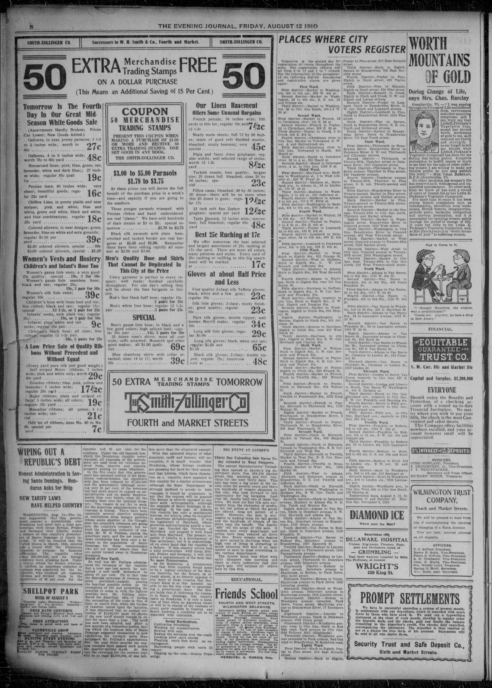

Wiping Out a Republic's DebtExtinguiendo la deuda de una república
Evening Journal. Wilmington, Del., August 12, 1910. Page 8. Published by J. Milton Davidson. A daily newspaper, 1888–1932.Evening Journal. Wilmington, Del., 12 de agosto de 1910. Página 8. Publicado por J. Milton Davidson. Periódico diario, 1888–1932. View the originalVer el original

The Evening Journal reported on the fiscal success of American Customs Receiver W. E. Pulliam in the Dominican Republic, noting that his administration reduced tariffs by 15 percent by shifting tax burdens from necessities to luxuries. Customs receipts exceeded expectations and were projected to reach at least $3,000,000 for the year, far surpassing the required $2,000,000 benchmark. The report asserted that backing from the U.S. Navy had suppressed revolutionary attempts and held up the Dominican financial system as a model for Honduras.The Evening Journal informó sobre el éxito financiero del receptor de aduanas estadounidense W. E. Pulliam en la República Dominicana, destacando que su administración redujo los aranceles en un 15 por ciento trasladando la carga tributaria de los artículos de primera necesidad a los de lujo. La recaudación aduanera superó las expectativas y se proyectaba alcanzar al menos 3.000.000 de dólares en el año, sobrepasando con creces la meta requerida de 2.000.000 de dólares. El informe sostenía que el respaldo de la Armada de los EE. UU. había sofocado intentos revolucionarios y presentaba el sistema financiero dominicano como un modelo para Honduras.
FULL TEXT:TEXTO COMPLETO:
WIPING OUT A REPUBLIC'S DEBTBORRANDO LA DEUDA DE UNA REPÚBLICA
Honest Administration is Saving Santo Domingo. Honduras Asks for HelpLa administración honesta está salvando a Santo Domingo. Honduras pide ayuda
NEW TARIFF LAWS HAVE HELPED COUNTRYLAS NUEVAS LEYES ARANCELARIAS HAN AYUDADO AL PAÍS
WASHINGTON, Aug. 11—The recent suggestion that this government assume a protectorate over Honduras and enter into a joint protectorate with Great Britian, France and Germany over Liberia, makes a review of this country's protectorate of Santo Domingo of timely interest. It will be recalled that the United States in March, 1905, entered into a treaty with the Dominican Republic to arrange its financial difficulties. The republic owed about $20,000,000, and its foreign creditors were pressing hard. Under a treaty, which the Senate reluctantly ratified, an American collector of customs was appointed for the republic, who received all customs receipts and divided them in the proportion of 45 per cent. for the republic and 55 per cent. for the creditors. Under the old Spanish law, which the Dominican republic never repealed, all expenses of the government are paid them for revenues derived from, imports and exports, property paying no taxes whatever.WASHINGTON, 11 de agosto—La reciente sugestión de que este gobierno asuma un protectorado sobre Honduras y entre en un protectorado conjunto con Gran Bretaña, Francia y Alemania sobre Liberia, hace que una revisión del protectorado de este país sobre Santo Domingo sea de interés oportuno. Se recordará que los Estados Unidos en marzo de 1905, entraron en un tratado con la República Dominicana para arreglar sus dificultades financieras. La república debía unos $20,000,000, y sus acreedores extranjeros estaban presionando duro. Bajo un tratado, que el Senado ratificó a regañadientes, un colector de aduanas estadounidense fue nombrado para la república, quien recibía todos los ingresos aduaneros y los dividía en la proporción del 45 por ciento para la república y el 55 por ciento para los acreedores. Bajo la antigua ley española, que la república dominicana nunca derogó, todos los gastos del gobierno son pagados de rentas derivadas de, importaciones y exportaciones, la propiedad no pagando impuestos en absoluto.
In the five years that this government has assumed control of the Dominican custom-houses, the republic's debt has been reduced by $7,000,000 and the government, although receiving only 45 per cent. of the revenues has had more money to expend on administration and on public improvements than ever before when all the receipts went into the national treasury. The reason is not far to seek, for the American administration of the customs is honest. There have been naturally several abortive attempts at revolutions from hungry patriots whose souls shudder at the thought that the country's revenues are going into the country's treasury, but behind the American collector of customs, Mr. W. E. Pulliam, stands the American navy, and the net result of these revolutons has been only a decrease in the population of Santo Domingo, for those revolutionists who are not buried where they fall are safely tucked away in Dominican dungeons.En los cinco años que este gobierno ha asumido el control de las aduanas dominicanas, la deuda de la república ha sido reducida por $7,000,000 y el gobierno, aunque recibiendo solo el 45 por ciento de las rentas ha tenido más dinero para gastar en administración y en mejoras públicas que nunca antes cuando todos los ingresos iban al tesoro nacional. La razón no está lejos de buscarse, pues la administración estadounidense de las aduanas es honesta. Ha habido naturalmente varios intentos abortados de revoluciones de patriotas hambrientos cuyas almas se estremecen al pensar que las rentas del país están yendo al tesoro del país, pero detrás del colector de aduanas estadounidense, el Sr. W. E. Pulliam, está la marina estadounidense, y el resultado neto de estas revoluciones ha sido solo una disminución en la población de Santo Domingo, pues aquellos revolucionistas que no son enterrados donde caen están seguramente guardados en mazmorras dominicanas.
Result of New Tariff.Resultado del nuevo arancel.
So well has Mr. Pulliam administered the revenues of the republic that a year ago last month he submitted a new tariff downward by about 15 per cent. Up to that time the Spanish principal of revenue taxation prevailed—namely, placing the heaviest possible duties on the necessities of life and permitting the luxuries to come in with the lightest possible duty. Mr. Pulliam introduced the American idea of letting the necessities of life come in free of duty, or nearly free, while the burden of taxation rested upon the luxuries. It was stipulated that an annual collection of $2,000,000 must be shown if the new tariff should remain in effect for more than a year. The tariff has now been adopted, and after a few months of a transition period, during which the business men of Santo Domingo adgusted themselves to new conditions, the receipts more than surpassed Mr. Pulliam's expectations. For the past three months the custom receipts have passed each month the quarter-million mark. At this rate the revenues for the current year will be at least $3,000,000, or one million more than the stipulated amount.Tan bien ha administrado el Sr. Pulliam las rentas de la república que hace un año el mes pasado sometió un nuevo arancel hacia abajo por cerca del 15 por ciento. Hasta ese momento prevaleció el principio español de tributación de rentas—es decir, colocar los derechos más pesados posibles sobre las necesidades de la vida y permitir que los lujos entraran con el derecho más ligero posible. El Sr. Pulliam introdujo la idea estadounidense de dejar que las necesidades de la vida entraran libres de derechos, o casi libres, mientras la carga de la tributación descansaba sobre los lujos. Se estipuló que una colecta anual de $2,000,000 debía mostrarse si el nuevo arancel había de permanecer en efecto por más de un año. El arancel ha sido ahora adoptado, y después de unos pocos meses de un período de transición, durante el cual los hombres de negocios de Santo Domingo se ajustaron a las nuevas condiciones, los ingresos más que superaron las expectativas del Sr. Pulliam. Por los pasados tres meses los ingresos aduaneros han pasado cada mes la marca del cuarto de millón. A esta tasa las rentas para el año corriente serán al menos $3,000,000, o un millón más que la cantidad estipulada.
With this splended display of what American tariff and honesty will accomplish, it is small wonder that Honduras,, whose foreign creditors are pressing her hard for their money, and that Liberia, which faces dissolution as a republic, have appealed to this country for a similar protectorate. Although the State Department is strongly inclined to accede to both requests, it would be premature to say that the request will be granted. The Senate is bitterly opposed to any more such arrangements, although the example of Santo Domingo is encouraging. In the case of Liberia this country has only a sentimental interest, for Liberia owes its inception to American philanthropists.. It was the legislature of Maryland, whose generous appropriations nearly a century ago founded the Province of Maryland and peopled it with freed men from Maryland. The present republic if Liberia is a development of that settlement, but it is acknowledged on every hand that the republic is a failure. If this country enters into a joint protectorate with Great Britain, France and Germany, it will only mean a postponement of the fatal day.Con esta espléndida demostración de lo que el arancel y la honestidad estadounidenses lograrán, es pequeña maravilla que Honduras, cuyos acreedores extranjeros la están presionando duro por su dinero, y que Liberia, que enfrenta la disolución como república, hayan apelado a este país por un protectorado similar. Aunque el Departamento de Estado está fuertemente inclinado a acceder a ambas peticiones, sería prematuro decir que la petición será concedida. El Senado está amargamente opuesto a más arreglos tales, aunque el ejemplo de Santo Domingo es alentador. En el caso de Liberia este país tiene solo un interés sentimental, pues Liberia debe su incepción a filántropos estadounidenses. Fue la legislatura de Maryland, cuyas generosas asignaciones hace casi un siglo fundaron la Provincia de Maryland y la poblaron con hombres liberados de Maryland. La presente república de Liberia es un desarrollo de ese asentamiento, pero es reconocido por todas partes que la república es un fracaso. Si este país entra en un protectorado conjunto con Gran Bretaña, Francia y Alemania, solo significará un aplazamiento del día fatal.
No more Protectorates.No más protectorados.
As for Honduras, a protectorate over that little republic would seem to be a logical corollary of the Monroe Doctrine, but the Senate, as already stated, is so bitterly opposed to any more of these treaties that Secretary Knox is at this moment unable to see his way clear to establishing a protectorate there. The Senate holds that if, following the example in Santo Domingo, this country takes up Honduras, it is only a question of time when an American receiver will be in charge of the customs of every petty republic in Central and South America, a condition not to be regarded with toleration.En cuanto a Honduras, un protectorado sobre esa pequeña república parecería ser un corolario lógico de la Doctrina Monroe, pero el Senado, como ya se ha declarado, está tan amargamente opuesto a más de estos tratados que el Secretario Knox en este momento es incapaz de ver claro su camino para establecer un protectorado allí. El Senado sostiene que si, siguiendo el ejemplo en Santo Domingo, este país toma Honduras, es solo una cuestión de tiempo cuando un receptor estadounidense estará a cargo de las aduanas de cada pequeña república en América Central y del Sur, una condición que no ha de ser considerada con toleración.
This collection gathers the coverage of the Dominican Republic in the American press, in the order it was published.Esta colección reúne la cobertura de la República Dominicana en la prensa estadounidense, en el orden en que se publicaron.